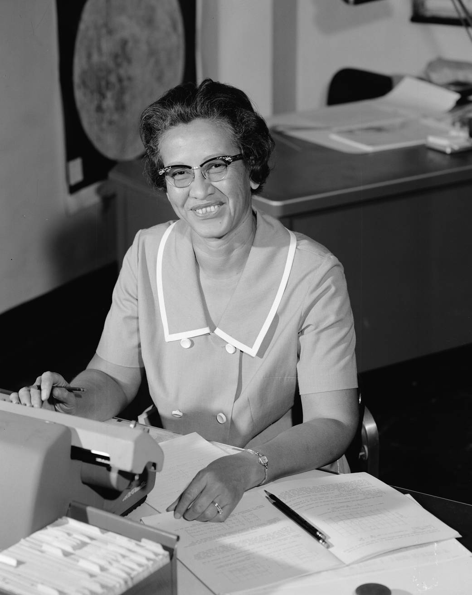

01↗
1961 · Projeto Mercury
Freedom 7
Katherine calculou a trajetória da missão de Alan Shepard, o primeiro voo espacial tripulado dos Estados Unidos.
Conheça Katherine Johnson: uma mulher negra que transformou precisão, coragem e curiosidade em trajetórias que mudaram a história.
conhecer história↘
NASA / LANGLEYFilha de um agricultor e de uma educadora, Katherine cresceu em uma época em que o acesso de pessoas negras à educação era limitado. Seu pai percorreu quilômetros para que os filhos pudessem continuar estudando.
Em 1953, ela começou a trabalhar em Langley. Como “computador humano”, transformava fórmulas em trajetórias para a aviação e, depois, para a exploração espacial.
Três momentos para entender por que seu trabalho foi tão importante.
1961 · Projeto Mercury
Katherine calculou a trajetória da missão de Alan Shepard, o primeiro voo espacial tripulado dos Estados Unidos.
1962 · John Glenn
John Glenn pediu que ela conferisse à mão os números do computador antes de sua missão orbital.
1969 · Programa Apollo
Ela contribuiu para os cálculos que ajudaram a sincronizar o módulo lunar e o módulo de comando.
Katherine mostrou que inteligência e criatividade não têm uma única aparência. Sua história continua inspirando mulheres negras na ciência, na tecnologia e na engenharia.
Responder perguntas difíceis com conhecimento.
Ocupar espaços e abrir novos caminhos.
Construir descobertas em equipe.
“Faça o seu melhor. Mas goste do que faz.”
— Katherine JohnsonEsta biografia foi preparada para a atividade de Tecnologia e Informação.